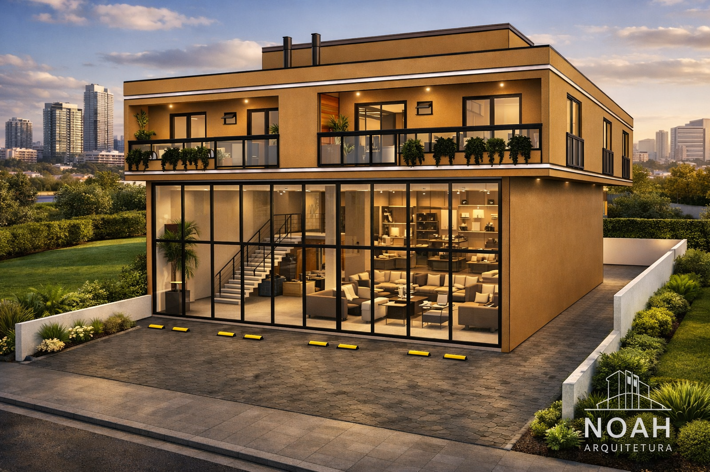

Projetos
 Projeto Residencial
Projeto Residencial

Projeto Misto Interiores
Interiores
A Noah Arquitetura atua desde 2014 nos estados do Paraná e Santa Catarina, oferecendo soluções completas em arquitetura, sempre unindo técnica, criatividade e compromisso com a qualidade. Nossa missão é transformar sonhos em projetos únicos, funcionais e cheios de personalidade, respeitando as necessidades de cada cliente e valorizando cada detalhe.
Somos especialistas na elaboração de laudos técnicos e avaliações de imóveis urbanos, em conformidade com a NBR 14.653, trabalhando com precisão, responsabilidade e embasamento técnico para garantir segurança, transparência e credibilidade em cada serviço prestado. Atendemos tanto pessoas físicas quanto empresas, sempre com profissionalismo e ética.
Além disso, contamos com assessoria jurídica especializada em regularização imobiliária, oferecendo suporte completo nos processos de usucapião, desde a análise técnica e documental até o acompanhamento jurídico, proporcionando mais segurança, agilidade e tranquilidade aos nossos clientes.
Desenvolvemos projetos arquitetônicos completos, desde a concepção até o detalhamento, criando espaços que unem estética, conforto e funcionalidade. Trabalhamos com:
Cada projeto é pensado de forma exclusiva, refletindo o estilo de vida, os objetivos e o investimento de cada cliente. Utilizamos tecnologia, criatividade e conhecimento técnico para entregar soluções modernas, inteligentes e duradouras.
Na Noah Arquitetura, acreditamos que arquitetura vai além de construir — é sobre criar experiências, valorizar espaços e melhorar a qualidade de vida. Nosso compromisso é oferecer um atendimento próximo, transparente e eficiente, garantindo tranquilidade em todas as etapas do processo.
Projeto Residencial

Projeto Misto
Interiores
 Arquiteta
Projetos & Avaliações
Arquiteta
Projetos & Avaliações
 Engenheiro Civil
Avaliações Imobiliárias
Engenheiro Civil
Avaliações Imobiliárias
Nossa equipe é formada por arquiteta, engenheiro, designer e técnico em edificações, além de assessoria jurídica especializada.
O engenheiro atua há mais de 20 anos em avaliações de imóveis, credenciado pela Caixa Econômica Federal, seguindo rigorosamente a NBR 14.653.
A arquiteta também atua na área de avaliações e desenvolvimento de projetos completos. O designer e técnico em edificações desenvolve projetos técnicos, modelagens 3D e moldes para vacuum formagem.
A assessoria jurídica conta com advogada formada há mais de 25 anos, atuando em diversas áreas do direito, com especialização em usucapião.
📧 noaharquitetura@hotmail.com
📞 (43) 99614-1663 – PR
📞 (48) 99686-5891 – SC